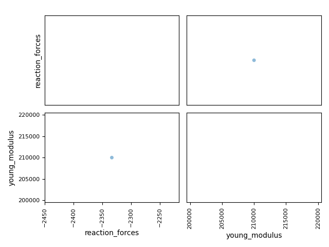
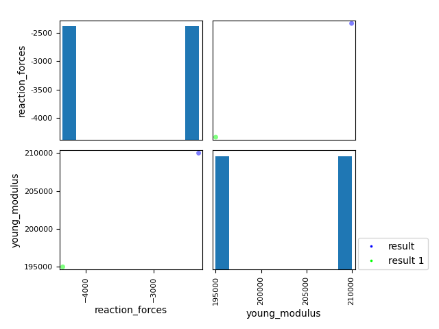
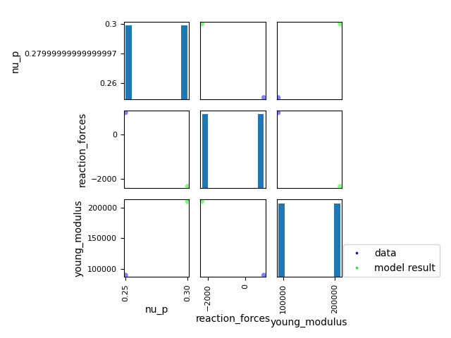

Note
Click here to download the full example code
Visualize and compare model results¶
Visualize model results and compare to other model results or reference data.
from __future__ import annotations
import logging
from gemseo.datasets.dataset import Dataset
from gemseo.post.dataset.bars import BarPlot
from gemseo.post.dataset.scatter_plot_matrix import ScatterMatrix
from numpy import atleast_1d
from pandas import DataFrame
from pandas import concat
from vimseo import EXAMPLE_RUNS_DIR_NAME
from vimseo.api import activate_logger
from vimseo.api import create_model
from vimseo.core.model_result import ModelResult
from vimseo.core.model_settings import IntegratedModelSettings
from vimseo.utilities.plotting_utils import plot_curves
activate_logger(level=logging.INFO)
After execution, the results of a model can be visualized. The curves are shown by default:
model_name = "BendingTestAnalytical"
load_case = "Cantilever"
model = create_model(
model_name,
load_case,
model_options=IntegratedModelSettings(
directory_archive_root=f"../../../{EXAMPLE_RUNS_DIR_NAME}/archive/visualize_model_result",
directory_scratch_root=f"../../../{EXAMPLE_RUNS_DIR_NAME}/scratch/visualize_model_result",
cache_file_path=f"../../../{EXAMPLE_RUNS_DIR_NAME}/caches/visualize_model_result/{model_name}_{load_case}_cache.hdf",
),
)
model.cache = None
model.archive_manager._accept_overwrite_job_dir = True
model.execute()
result = ModelResult.from_data({
"inputs": model.get_input_data(),
"outputs": model.get_output_data(),
})
figs = model.plot_results(show=True, save=False)
figs["dplt_vs_dplt_grid"]
Out:
INFO - 15:17:31: Current root directory of job directory is C:\Users\sebastien.bocquet\PycharmProjects\vimseo\docs\runnable_examples\02_integrated_models\..\..\..\model_runs\archive\visualize_model_result.
INFO - 15:17:31: Found 1 entries in the cache file : BendingTestAnalytical_Cantilever_cache.hdf node : node
INFO - 15:17:31: Saving plots to C:\Users\sebastien.bocquet\PycharmProjects\vimseo\docs\runnable_examples\02_integrated_models
INFO - 15:17:31: Plot BendingTestAnalytical_Cantilever_dplt_vs_dplt_grid.html is saved to C:\Users\sebastien.bocquet\PycharmProjects\vimseo\docs\runnable_examples\02_integrated_models\BendingTestAnalytical_Cantilever_dplt_vs_dplt_grid.html
INFO - 15:17:31: Plot BendingTestAnalytical_Cantilever_moment_vs_moment_grid.html is saved to C:\Users\sebastien.bocquet\PycharmProjects\vimseo\docs\runnable_examples\02_integrated_models\BendingTestAnalytical_Cantilever_moment_vs_moment_grid.html
figs["moment_vs_moment_grid"]
Scalar outputs can be visualized in a scatter matrix:
figs = model.plot_results(
show=True,
save=True,
data="SCALARS",
scalar_names=["young_modulus", "reaction_forces"],
)
figs["scalars"]

Out:
INFO - 15:17:31: Saving plots to C:\Users\sebastien.bocquet\PycharmProjects\vimseo\docs\runnable_examples\02_integrated_models
C:\Users\sebastien.bocquet\PycharmProjects\vimseo\.tox\doc\Lib\site-packages\pandas\plotting\_matplotlib\misc.py:91: UserWarning:
Attempting to set identical low and high xlims makes transformation singular; automatically expanding.
C:\Users\sebastien.bocquet\PycharmProjects\vimseo\.tox\doc\Lib\site-packages\pandas\plotting\_matplotlib\misc.py:100: UserWarning:
Attempting to set identical low and high xlims makes transformation singular; automatically expanding.
C:\Users\sebastien.bocquet\PycharmProjects\vimseo\.tox\doc\Lib\site-packages\pandas\plotting\_matplotlib\misc.py:101: UserWarning:
Attempting to set identical low and high ylims makes transformation singular; automatically expanding.
C:\Users\sebastien.bocquet\PycharmProjects\vimseo\.tox\doc\Lib\site-packages\gemseo\utils\matplotlib_figure.py:59: UserWarning:
FigureCanvasAgg is non-interactive, and thus cannot be shown
[<Figure size 640x480 with 4 Axes>]
Results can be obtained by querying the archive.
For a DirectoryArchive, the path to access to the current result is:
model.archive_manager.job_directory
Out:
WindowsPath('../../../model_runs/archive/visualize_model_result/BendingTestAnalytical/Cantilever/11')
A result can be retrieved from this path:
result = ModelResult.from_data(
model.archive_manager.get_result(model.archive_manager.job_directory)
)
print(result)
Out:
INFO - 15:17:32: Found 1 entries in the cache file : BendingTestAnalytical_Cantilever_cache.hdf node : node
Scalars:
{'young_modulus': 210000.0, 'nu_p': 0.3, 'length': 600.0, 'width': 30.0, 'height': 40.0, 'imposed_dplt': -5.0, 'relative_dplt_location': 1.0, 'reaction_forces': -2333.3333333333335, 'dplt_at_force_location': -4.999999999999994, 'maximum_dplt': -4.999999999999994, 'location_max_dplt': 600.0}
Vectors:
{}
Curves:
('dplt_grid', 'dplt')
0 1 2 3 4 5 6 7 8 9 10 11 12 13 14 15 16 17 18 19 20 21 22 23 24 25 26 27 28 29 30 31 32 33 34 35 36 37 38 39 40 41 42 43 44 45 46 47 48 49 50 51 52 53 54 55 56 57 58 59 60 61 62 63 64 65 66 67 68 69 70 71 72 73 74 75 76 77 78 79 80 81 82 83 84 85 86 87 88 89 90 91 92 93 94 95 96 97 98 99
dplt_grid 0.0 6.060606 12.121212 18.181818 24.242424 30.303030 36.363636 42.424242 48.484848 54.545455 60.606061 66.666667 72.727273 78.787879 84.848485 90.909091 96.969697 103.030303 109.090909 115.151515 121.212121 127.272727 133.333333 139.393939 145.454545 151.515152 157.575758 163.636364 169.696970 175.757576 181.818182 187.878788 193.939394 200.000000 206.060606 212.121212 218.181818 224.242424 230.30303 236.363636 242.424242 248.484848 254.545455 260.606061 266.666667 272.727273 278.787879 284.848485 290.909091 296.969697 303.030303 309.090909 315.151515 321.212121 327.272727 333.333333 339.393939 345.454545 351.515152 357.575758 363.636364 369.696970 375.757576 381.818182 387.878788 393.939394 400.000000 406.060606 412.121212 418.181818 424.242424 430.303030 436.363636 442.424242 448.484848 454.545455 460.606061 466.666667 472.727273 478.787879 484.848485 490.909091 496.969697 503.030303 509.090909 515.151515 521.212121 527.272727 533.333333 539.393939 545.454545 551.515152 557.575758 563.636364 569.696970 575.757576 581.818182 587.878788 593.939394 600.0
dplt 0.0 -0.000763 -0.003040 -0.006817 -0.012079 -0.018809 -0.026992 -0.036612 -0.047655 -0.060105 -0.073946 -0.089163 -0.105741 -0.123663 -0.142915 -0.163481 -0.185345 -0.208492 -0.232908 -0.258575 -0.285479 -0.313604 -0.342936 -0.373457 -0.405153 -0.438009 -0.472009 -0.507137 -0.543379 -0.580718 -0.619139 -0.658627 -0.699166 -0.740741 -0.783336 -0.826936 -0.871525 -0.917088 -0.96361 -1.011075 -1.059467 -1.108772 -1.158973 -1.210055 -1.262003 -1.314801 -1.368434 -1.422886 -1.478142 -1.534187 -1.591004 -1.648579 -1.706897 -1.765940 -1.825695 -1.886145 -1.947276 -2.009071 -2.071516 -2.134595 -2.198291 -2.262591 -2.327478 -2.392938 -2.458953 -2.525510 -2.592593 -2.660185 -2.728272 -2.796839 -2.865869 -2.935348 -3.005259 -3.075588 -3.146319 -3.217436 -3.288924 -3.360768 -3.432952 -3.505461 -3.578278 -3.651390 -3.724780 -3.798432 -3.872332 -3.946464 -4.020812 -4.095361 -4.170096 -4.245001 -4.320060 -4.395259 -4.470581 -4.546011 -4.621534 -4.697135 -4.772797 -4.848505 -4.924245 -5.0
('moment_grid', 'moment')
0 1
moment_grid 0.0 600.0
moment 1400000.0 0.0
Fields:
{}
Two model results can be compared. We first generate a second result:
model.execute({"young_modulus": atleast_1d(1.95e5), "imposed_dplt": atleast_1d(-10.0)})
result_1 = ModelResult.from_data({
"inputs": model.get_input_data(),
"outputs": model.get_output_data(),
})
result_1
Out:
INFO - 15:17:32: Current root directory of job directory is C:\Users\sebastien.bocquet\PycharmProjects\vimseo\docs\runnable_examples\02_integrated_models\..\..\..\model_runs\archive\visualize_model_result.
INFO - 15:17:32: Found 1 entries in the cache file : BendingTestAnalytical_Cantilever_cache.hdf node : node
ModelResult(metadata=ToolResultMetadata(generic={'datetime': '05-02-2026_15-17-32', 'version': '0.1.6.dev2+g2a701ddb0.d20260126'}, misc={}, settings={}, report={<MetaDataNames.model: 'model'>: 'BendingTestAnalytical', <MetaDataNames.load_case: 'load_case'>: 'Cantilever', <MetaDataNames.error_code: 'error_code'>: 0, <MetaDataNames.description: 'description'>: '', <MetaDataNames.job_name: 'job_name'>: '', <MetaDataNames.persistent_result_files: 'persistent_result_files'>: '', <MetaDataNames.n_cpus: 'n_cpus'>: 1, <MetaDataNames.date: 'date'>: '2026-02-05 15:17:32.584512', <MetaDataNames.cpu_time: 'cpu_time'>: 0.008231163024902344, <MetaDataNames.user: 'user'>: 'sebastien.bocquet', <MetaDataNames.machine: 'machine'>: 'B20191729', <MetaDataNames.vims_git_version: 'vims_git_version'>: '8a1ee591b9fddbf04e6e1c18ea9d3fa64dba64ac', <MetaDataNames.directory_archive_root: 'directory_archive_root'>: 'C:\\Users\\sebastien.bocquet\\PycharmProjects\\vimseo\\model_runs\\archive\\visualize_model_result', <MetaDataNames.directory_archive_job: 'directory_archive_job'>: '..\\..\\..\\model_runs\\archive\\visualize_model_result\\BendingTestAnalytical\\Cantilever\\12', <MetaDataNames.directory_scratch_root: 'directory_scratch_root'>: 'C:\\Users\\sebastien.bocquet\\PycharmProjects\\vimseo\\model_runs\\scratch\\visualize_model_result', <MetaDataNames.directory_scratch_job: 'directory_scratch_job'>: ''}, model=ModelDescription(name='BendingTestAnalytical', summary=' An analytical model for the bending of a parallelepipedic beam', load_case=Beam_Cantilever(name='Cantilever', domain='Beam', summary='A cantilever load case.', plot_parameters=PlotParameters(curves=[]), bc_variable_names=['imposed_dplt', 'relative_dplt_location'], load=Load(direction='', sign='', type='')), dataflow={'model_inputs': ['length', 'width', 'height', 'imposed_dplt', 'relative_dplt_location', 'young_modulus', 'nu_p'], 'model_outputs': ['reaction_forces', 'maximum_dplt', 'dplt_grid', 'location_max_dplt', 'dplt', 'moment', 'moment_grid', 'dplt_at_force_location', 'error_code', 'model', 'load_case', 'description', 'job_name', 'persistent_result_files', 'n_cpus', 'date', 'cpu_time', 'user', 'machine', 'vims_git_version', 'directory_archive_root', 'directory_archive_job', 'directory_scratch_root', 'directory_scratch_job'], 'PreBendingTestAnalytical_Cantilever': {'inputs': ['length', 'width', 'height', 'imposed_dplt', 'relative_dplt_location', 'young_modulus', 'nu_p'], 'outputs': ['imposed_dplt_location', 'quadratic_moment', 'reaction_forces', 'moment', 'moment_grid', 'solver', 'boundary']}, 'RunBendingTestAnalytical': {'inputs': ['imposed_dplt_location', 'quadratic_moment', 'reaction_forces', 'moment', 'moment_grid', 'solver', 'boundary', 'length', 'width', 'height', 'imposed_dplt', 'relative_dplt_location', 'young_modulus', 'nu_p'], 'outputs': ['dplt', 'dplt_grid', 'moment', 'moment_grid', 'imposed_dplt_location', 'reaction_forces']}, 'PostBendingTestAnalytical_Cantilever': {'inputs': ['dplt', 'dplt_grid', 'moment', 'moment_grid', 'imposed_dplt_location', 'reaction_forces'], 'outputs': ['reaction_forces', 'maximum_dplt', 'dplt_grid', 'location_max_dplt', 'dplt', 'moment', 'moment_grid', 'dplt_at_force_location', 'error_code']}, 'subroutine_names': []}, default_inputs={<InputGroupNames.NUMERICAL_VARS: 'numerical variables'>: {}, <InputGroupNames.BC_VARS: 'boundary conditions variables'>: {'imposed_dplt': [-5.0], 'relative_dplt_location': [1.0]}, <InputGroupNames.GEOMETRICAL_VARS: 'geometrical variables'>: {'length': [600.0], 'width': [30.0], 'height': [40.0]}, <InputGroupNames.MATERIAL_VARS: 'material variables'>: {'young_modulus': [210000.0], 'nu_p': [0.3]}}, curves=[('dplt_grid', 'dplt'), ('moment_grid', 'moment')], verbose=False)), scalars={'length': 600.0, 'width': 30.0, 'height': 40.0, 'imposed_dplt': -10.0, 'relative_dplt_location': 1.0, 'young_modulus': 195000.0, 'nu_p': 0.3, 'reaction_forces': -4333.333333333333, 'dplt_at_force_location': -9.999999999999991, 'maximum_dplt': -9.999999999999991, 'location_max_dplt': 600.0}, vectors={}, curves=[<vimseo.utilities.curves.Curve object at 0x000001FEAEC13ED0>, <vimseo.utilities.curves.Curve object at 0x000001FEAEC13A50>], fields={}, snapshots=[])
The scalars can be compared in a scatter matrix:
variable_names = ["young_modulus", "reaction_forces"]
df = DataFrame([
result.get_numeric_scalars(variable_names=variable_names),
result_1.get_numeric_scalars(variable_names=variable_names),
])
df["color"] = range(len(df))
plot = ScatterMatrix(Dataset.from_dataframe(df), coloring_variable="color")
plot.labels = ["result", "result 1"]
fig = plot.execute(
save=False,
show=True,
)
fig


Out:
C:\Users\sebastien.bocquet\PycharmProjects\vimseo\.tox\doc\Lib\site-packages\gemseo\utils\matplotlib_figure.py:59: UserWarning:
FigureCanvasAgg is non-interactive, and thus cannot be shown
[<Figure size 640x480 with 4 Axes>]
.. note::
Since the compared data are in a ``Pandas.DataFrame``,
other plotting library can be used, like ``Seaborn``:
``sns.pairplot(df)``
The curves can also be compared:
plot_curves(
[
result.get_curve(("dplt_grid", "dplt")),
result_1.get_curve(("dplt_grid", "dplt")),
],
labels=["result", "result 1"],
)
A model result can be compared to a data.
A synthetic data is generated as a Pandas.DataFrame:
df = DataFrame.from_dict({
"young_modulus": atleast_1d(9e4),
"nu_p": atleast_1d(0.25),
"reaction_forces": atleast_1d(1e3),
})
variable_names = list(df.columns.values)
The model result is added to the DataFrame, and the latter is plotted:
df = concat(
[
df,
DataFrame([result.get_numeric_scalars(variable_names=variable_names)]),
],
ignore_index=True,
)
The dataframe is plotted to compare the model result to the synthetic result. First, we compare with a bar plot:
plot = BarPlot(Dataset.from_dataframe(df))
plot.title = "Comparison of model result with data"
plot.font_size = 20
plot.labels = ["data", "model result"]
fig = plot.execute(save=True, show=True, file_format="html")[0]
fig
And with a scatter matrix. For a small number of data to compare (two here), it is less relevant than the bar plot, It may become more interesting for a larger number of data to compare:
df["color"] = range(len(df))
plot = ScatterMatrix(Dataset.from_dataframe(df), coloring_variable="color")
plot.labels = ["data", "model result"]
fig = plot.execute(
save=False,
show=True,
)
fig


Out:
C:\Users\sebastien.bocquet\PycharmProjects\vimseo\.tox\doc\Lib\site-packages\gemseo\utils\matplotlib_figure.py:59: UserWarning:
FigureCanvasAgg is non-interactive, and thus cannot be shown
[<Figure size 640x480 with 9 Axes>]
Total running time of the script: ( 0 minutes 3.656 seconds)
Download Python source code: plot_02_visualize-model_result.py
Download Jupyter notebook: plot_02_visualize-model_result.ipynb